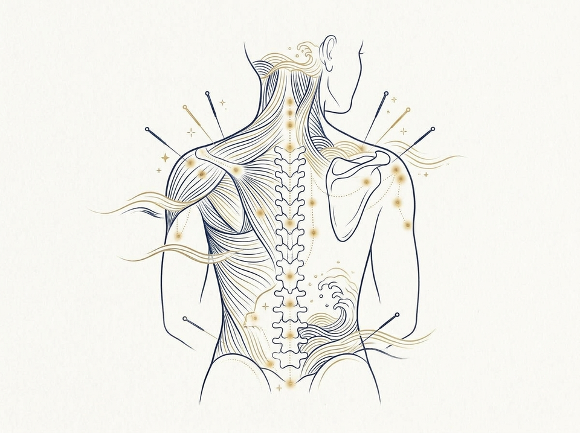

大腿骨頭壊死症の鍼灸
大腿骨頭への血流が途絶え壊死・圧潰する疾患。整形外科での専門治療を最優先とし生活の質を支えます。

このようなお悩みはありませんか？
- ✓立ち上がりや歩行・体重をかけたときに股関節に強い痛みが出る
- ✓安静にしていても股関節が痛み、太もも外側や膝・ふくらはぎへ広がる
- ✓股関節の曲げ伸ばしや開閉が制限され、歩き方（跛行）が変わってきた
- ✓ステロイド長期使用や多量飲酒、過去の股関節外傷の既往がある
原因・メカニズム
大腿骨の球状の頭部（大腿骨頭）への血流が減少・途絶えて骨組織が壊死し、体重がかかる部分がつぶれることで周囲に出血や浮腫が生じて強い痛みを引き起こす疾患です。骨折・脱臼などの外傷や放射線治療・減圧症など原因が明らかな「二次性」と、ステロイド大量使用や慢性的な多量飲酒の関与、あるいは原因不明の「特発性」があります。
当院の施術アプローチ
1. 骨頭の圧潰や関節変形が進行する深刻な疾患のため、まず整形外科専門医での診断・治療（免荷・杖の使用・薬物療法・骨切り術・人工関節置換術等）を最優先に案内します
2. 主治医の治療方針と許可を前提とした補完ケアとして、かばい歩きで過緊張する腰・臀部・下肢周囲の筋負担を穏やかに和らげる鍼灸を検討します
3. 医師の生活指導に沿った体重管理・運動制限・杖の活用や歩行訓練の継続を尊重し、無理のない生活の質維持をサポートします
よくある質問（FAQ）
Q. 大腿骨頭壊死症は鍼灸で壊死した骨を治せますか？
いいえ、血流が途絶えて壊死した骨組織自体を鍼灸で修復することはできません。整形外科での専門的な診断・治療が最優先となります。
Q. 手術のタイミングを遅らせるためにできることはありますか？
医師の生活指導のもと、減量や杖の使用による体重負荷の軽減、運動制限、股関節を安定させる無理のない筋力維持などが有効とされています。
#大腿骨頭壊死症 股関節の強い痛み 血流障害 骨切り術 人工関節 鍼灸